记一次短信验证码的"梅开五度"
这是一次针对某SRC厂商某业务的一个登陆页面的测试
文中相关漏洞现均已修复 提取其中思想精髓 分享给诸位师傅
梅开一度
开局一个登陆框，正常情况下，我随手一个admin/123456打过去。
如果提示“账号不存在”，或者“密码错误”。再立马掏出我祖传的用户遍历及弱口令字典。定向爆破。
但此时提示“账号或密码错误”，就老老实实去注册，走正常流程了。
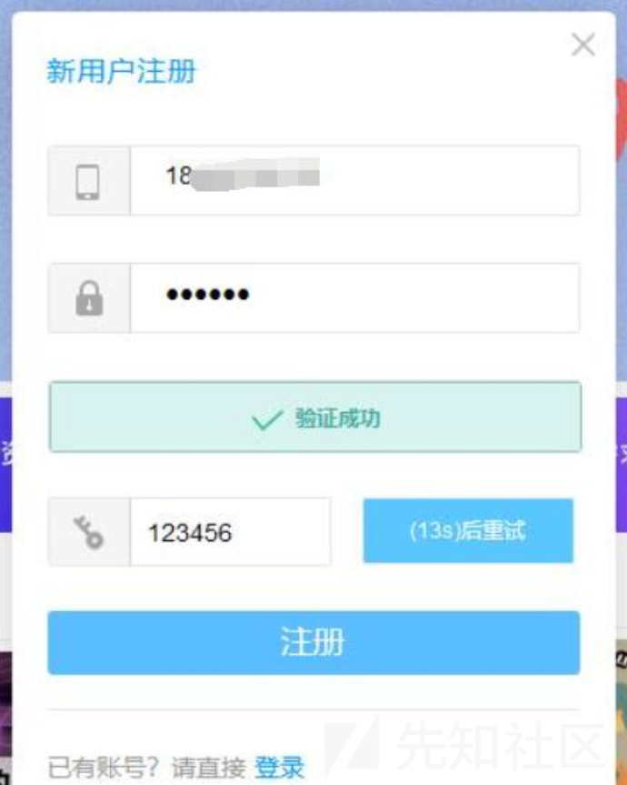
burp代理开启 记录下所有数据包 并对其中可疑参数记录标记
输入手机号 获取验证码 这时已然收到了真实的验证码
但是为了获取更多的隐藏参数以及尽可能的走全业务逻辑，这里随便输了一个123456 故意让其报错
果然返回验证码错误，但是同时数据包中也返回了正确的验证码
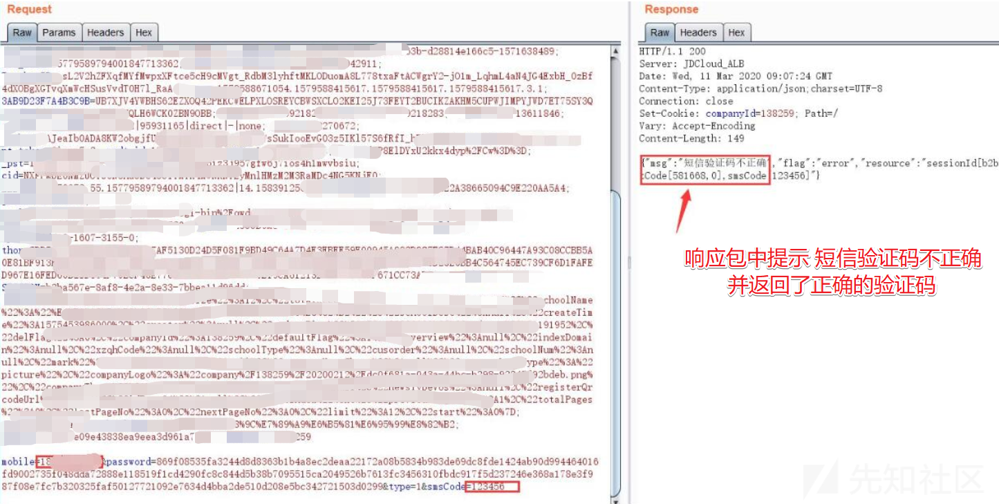
至此，任意用户注册一枚到手，提交到src很快啊，给了三位数的赏金
但我并不满足于此，正所谓，不想挖高危的安服仔不是一个好的白帽子
很自然的想到注册的地方都出问题了，那找回密码的地方呢，是否也同样也存在验证码就回显在响应包中呢？
抱着试一试单车变摩托的心理，尝试却发现返回包直接返回false，尝试将返回包修改为true，仍无法绕过前后端的校验
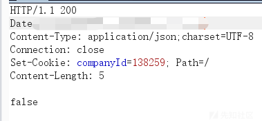
梅开二度
两周过去后，发现已经修复了，但是返回包的数据修复的很奇怪，删了好多东西，就只剩下一个flag参数了
{"flag":"error"}同样想当然的去尝试了一下将"error"修改为"success"等，无果
又测试了一遍，还是没问题。看来真的是修复了，但总感觉哪儿还是有问题。
掏出之前保存的数据包，翻回到之前的数据包，对照分析了一下，这次果然有了新的发现
第一次测试时的注册接口
GET /register/xxx HTTP/1.1Host: xxx.xxx.com
第二次测试时的注册接口
GET /registerPage HTTP/1.1Host: xxx.xxx.com
好家伙，接口都直接换了，难怪感觉到响应包哪里不对劲呢
啪，很快，我直接用原来的接口放上原来的payload打了过去，很快哈，验证码又返回在了响应包中
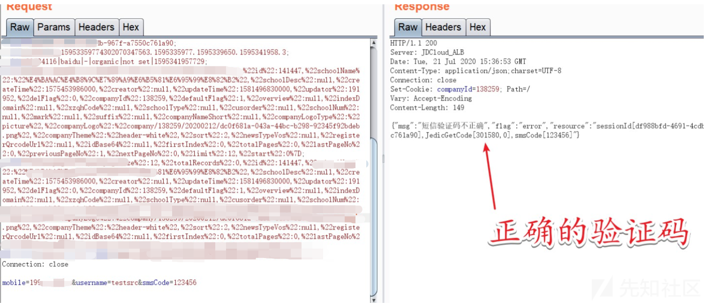及时提交到某SRC，这波又给了三位数的赏金
这里推测如下
是业务那边怕直接修改源码出差错后会影响正常逻辑，所以备份了下修改了一个新的接口去替换旧的那个接口，而忘记将备份的那个旧的接口修改并及时删除，依然存在着
这里bypass也就是通过构造请求包去请求旧的那个接口，然后得到回显
一点点小tips
所以在测试过程中比较重要的数据包要有意识的保留及整理，待复查的时候，要看看在原漏洞触发处是不是有了新的页面或者调用了新的接口，以及旧的接口还在否
是的话，用原来的url，接口或者exp直接打一下，看能不能捡漏（当然这种情况绝大多数会是逻辑漏洞吧）
梅开三度
又是两周过去啦，又是我，又是这个站，又是这个登录框
这次旧接口问题已经被修复，无法再通过就接口直接打验证码了。
啪，很快，灵光一闪，会不会这里只是校验了接口和 接口对应的验证码是否一致，而不校验手机号的呢。
接口对应的验证码是否一致，而不校验手机号的呢。
说干就干，先在注册填写手机号码获取验证码的时候使用自己的手机号进行接收验证码
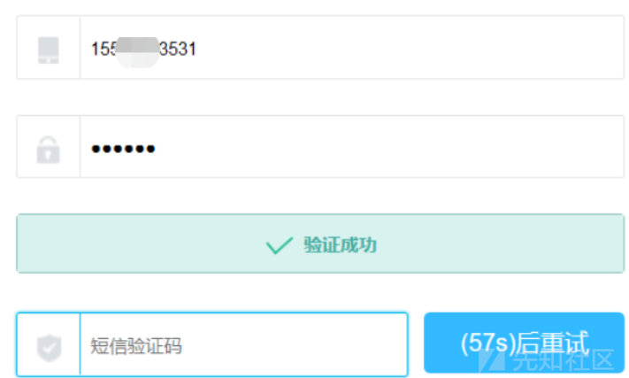发送验证码之后马上把手机修改成要任意注册的手机号码（很关键）
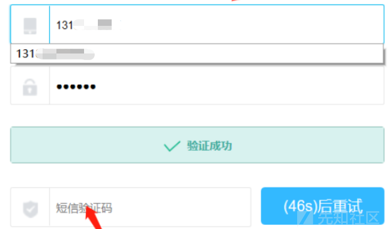
这里的验证码填写的是刚刚155xxxx3531接收到的验证码，而131xxxxxxxx这个号码是没有获取过验证码的
点击注册，真的就直接注册成功了，验证了上面的想法是正确的，这里只验证了验证码接口和对应的验证码，并没有校验手机号是否为接收验证码的那个手机号。
当成功产出一个漏洞时，要思考的有两件事。即横向或纵向上扩展成果
横向
既然这里没对注册手机号和验证码同时验证，如果验证码还没失效的话，批量注册一下？
将手机号的后两位作为变量，批量跑了一下也都成功了（这里设置两位作为变量，只是想证明漏洞真实纯在，尽可能多的减少对业务的影响）
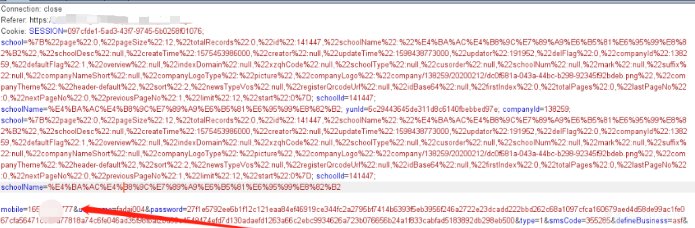又是一波三位数的赏金
梅开四度
梅都开三度了，还是三位数奖金，也是醉了。。。
不想挖高危的安服仔不是一个好的白帽子，继续搞。
纵向
很容易想到既然验证码没有与实际接收手机号的号码绑定起来。那它在整个账号体系里对应的功能点可不止注册哦。对的，还有密码找回嘛。
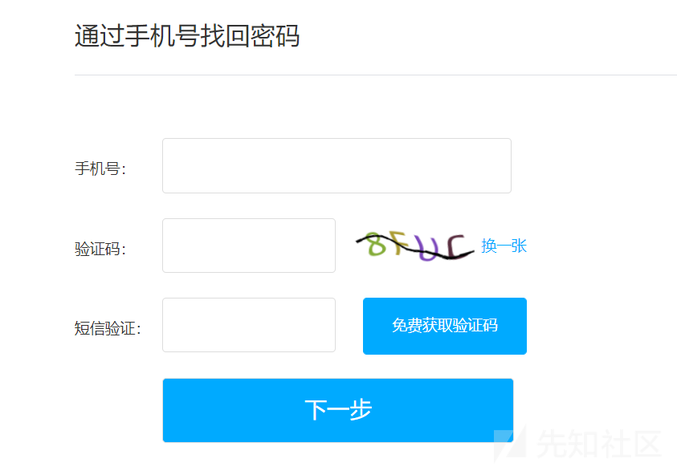后面就是同样的玩法了。
在找回密码处填写手机号码获取验证码的时候使用自己的手机号进行接收验证码，得到验证码后将自己的手机号替换为你想改密码的手机号。短信验证码就输自己手机号接收到的那个。
抓包操作如下
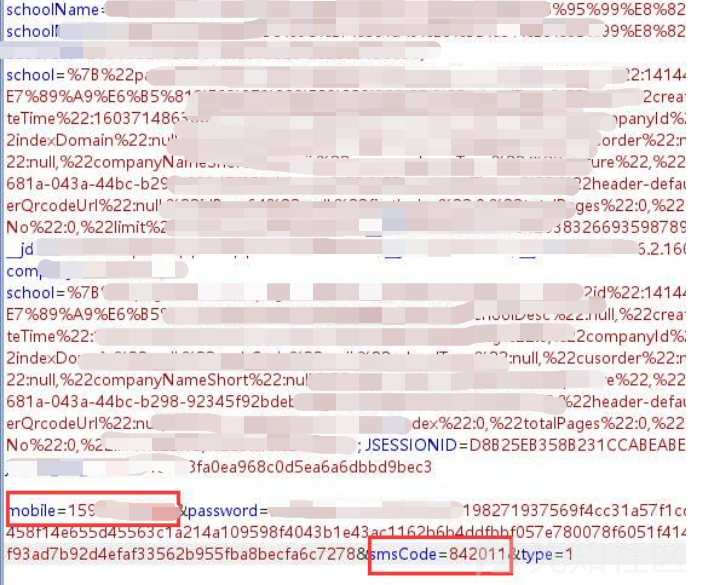burp拦截到如上所示的包，不要放行。Crt+r到repeater模块，修改mobile为你的目标手机号
发包，目标账号的密码被修改成功
这里继续尝试批量问题，也仍存在。即批量修改任意用户账号密码。
抱着单车变摩托的心理，提到src，冲。
然而，大意了。不讲武德，耗子尾汁。
我淦，万万没想到。可能前三个洞提的导致这个资产进入了保护期。
梅开五度
十几天后，抱着试一试的心理，结果不出所料，怕啥来啥，洞还是给修复啦。
没办法，谁让咱头铁，接着搞。
压箱底的祖传技巧
这里分享一个压箱底的祖传技巧，不保证百分百能成功，但遇到这种情况，值得一适。
F12切换到移动设备调试
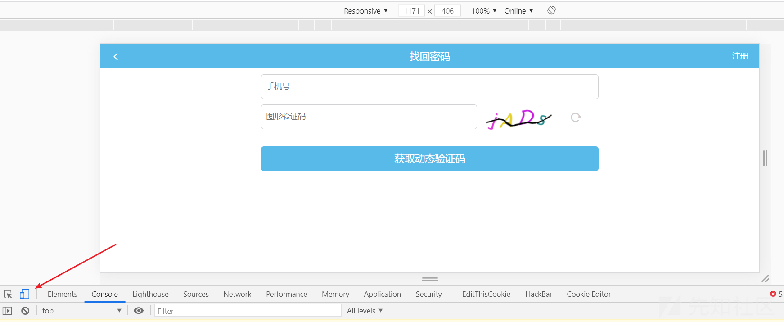
好家伙，界面感觉都和pc端的不太一样了，然后抓包，发现接口果然也不太一样。
后面就是和梅开四度里的玩法一样了，如下图
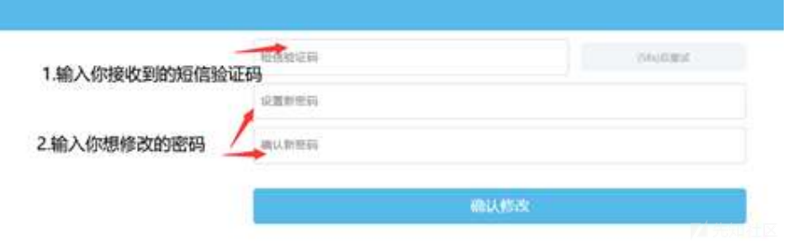
通过切换访问设备的标识成功bypass，收获批量修改任意用户账号密码一枚
提交到SRC后，最终get到了四位数的赏金
总结：
心细挖天下！！！
梅开一度：尽可能的走一遍完整的业务逻辑流程，尽管你觉得这里99.99%的可能性不会出错。
梅开二度：整理好测试中比较重要的数据包，揣测业务的修复心理，尝试用原来的payload打原来的接口。
梅开三度：思考漏洞产生表象后的触发原理，进而扩大漏洞的利用面。
梅开四度：同一个漏洞对应在业务体系里的对应的功能触发点可能不止一处。
梅开五度：不同设备的访问请求(User-Agent)，可能会导致实现同一业务功能的接口不同。

推荐阅读：

点赞，转发，在看
文章来源：先知社区
作者：Baili